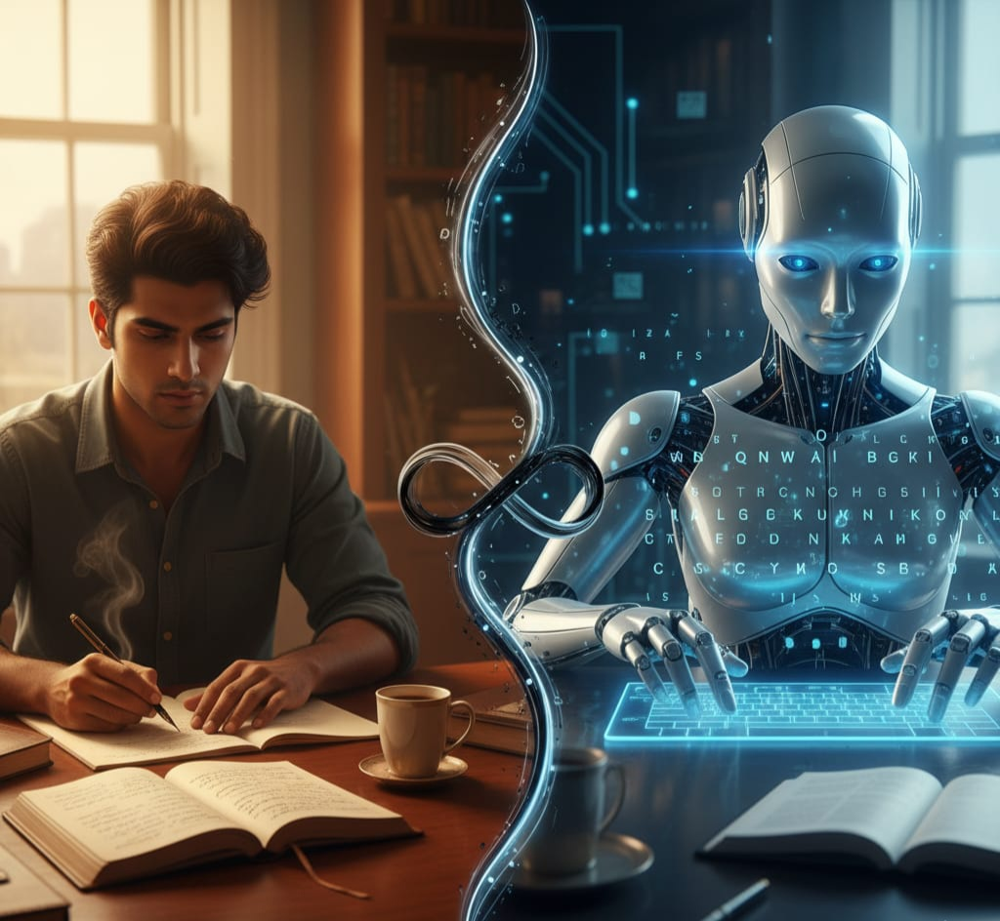
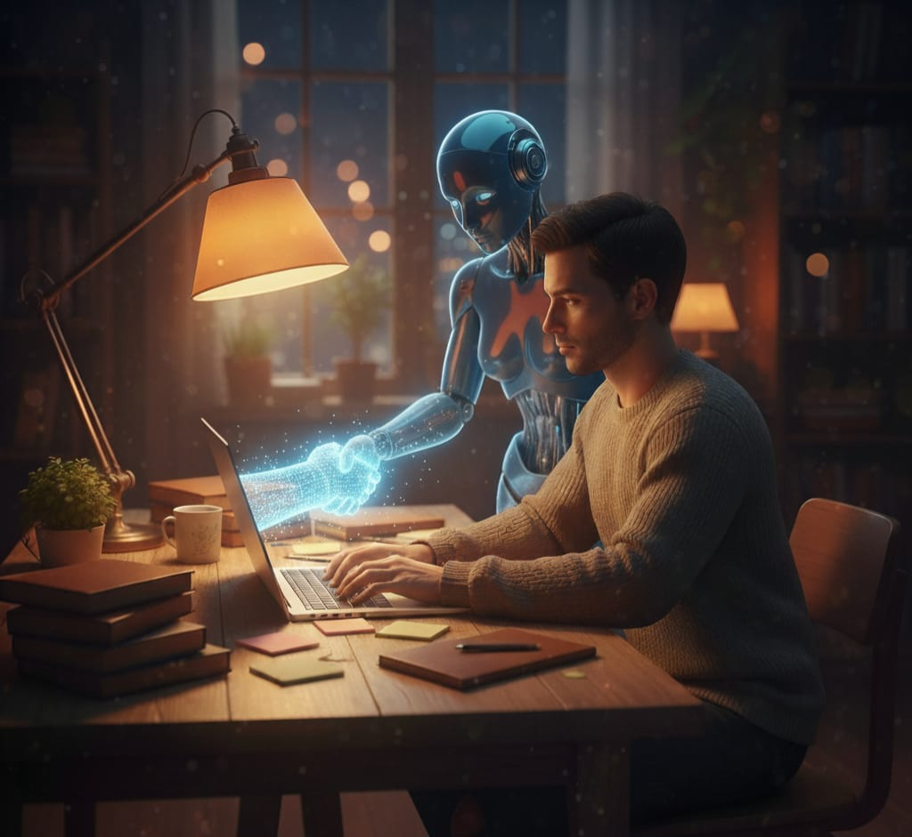
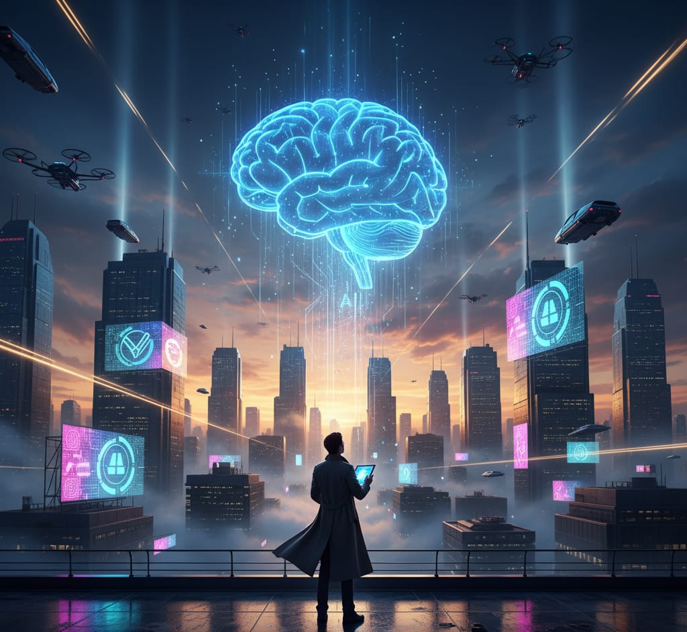

AI vs Human Writers: Which One Delivers Better Content?
Introduction
In the era of modern age we all use technology like never before. In 2025 we all know about artificial intelligence or AI in short. This AI has brought revolution in this era because of its efficiency although when it was first released it was not as good as now but after intensive training for past few years it has become much better. On the other hand us humans are the most intellectual creatures of earth we humans have the most powerful computer build In our body that computer is called Brain. Human are very creative because of that creativity AI was born but people are thinking that AI will replace them and take their jobs form them is it really true? Lets discuss it.
Why do people think Ai will take their jobs ?
Ai is a very interesting piece of technology that was created to help humans and it's already fulfilling its job. But as time passes AI progresses at everything and because of that people are starting to think it will replace or take their jobs! Yes Ai is progressing very fast and it will replace some selected jobs but it will create more jobs because ai needs someone to maintain and operate them. In the case of writing, yes AI does offer more variety and more well written content but it can never reach the creativity that humans have but AI can help us to implement our ideas and creativity easily and if we see AI as a companion we will be able to reach new heights.
Difference between Ai And Human written Content
There are many differences in human made content and ai made content. Some of the differences are obvious and some aren't quite notifiable. Some big differences are that Ai can create good quality work but it will be receptive in the long run and will feel boring but human made content on the other hand is limited by the imagination of the human who is making the content and you can say both humans and Ai have Infinite potential but humans don't need anyone to control them and thus they can can create to their fullest. And another big difference is writing style, humans each have a unique writing style but ai have an algorithm that they need to follow in order to run and because of that its predict able but humans open the other hand aren't bound by any limit that is pulling them down and the ai made content are very much taken form somewhere and presented but humans can create something from nothing but I n the end its the your choice to picc either ai made content or human made content.
Can Humans and AI Work Together?
To answer this question we first need to look at a few things, one of that is our perspective and our way of thinking if we see ai as a threat we can not work together with AIi at its full potential but if we see AI as friend we can reach new heights together we can take inspiration, do research faster on a particular topic and many more.By working together with ai we can discover new things and also learn many things if we learn to use ai we can be more efficient in our work , daily life and in studying also.
How Can AI Help In Content Creation?
Content Creation is limited by a person's own imagination and mind. By using AI in this field one can understand his/her interest and niche by doing that he/she can get new audience and new client in the modern era its important to gain knowledge about the things you are making content on and by AI we can do that a lot faster because it has access to that whole Internet that it can information from.
How Can AI Help Writers?
Writing is section in which many prefer its originally written because till this dat ai can not beat humans in creativity but the thing is it doesn't need to its not it's purpose it was made to assist us not to defeat us we can use it to do research on topics which can save our time greatly. We can tell it to help us with grammar, keywording etc. by using AI we can save time and even improve our work by telling it to review it and tell us its flaws. It can become our personal assistant and help us in many aspects of writing. If we manage to use its potential we can greatly benefit from it.
What Is The Future Of AI
In the future AI will be more advanced and will be able to help us more and potentially do some of the work for us but the future is unpredictable so we need to see it for ourselves but one thing is guaranteed if we befriend AI we can get help form it in many ways and it could also function as our personal assistant. But one thing is fotr sure it can never surpass humans because at the end we created them .